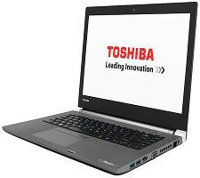
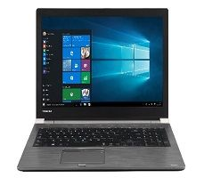
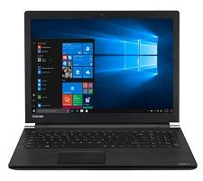

TOSHIBA
laptops
لاب توب Toshiba Tecra A40-D
1 - لاب توب Toshiba Tecra A40-D-147
- بسعر يبدأ من 11850 جنيه. - معالج Intel® Core™ i5-7200U 2.5 جيجا هرتز ( يصل الي 3.10 جيجا هرتز, 3 ميجا بايت ذاكرة مؤقتة، ثنائى النواة)). - 8 جيجا بايت DDR4 بسرعه 2133 ميجا هيرتز يصل الحد الاقصي الي 16 جيجا بايت - كرت شاشة مدمج Intel® HD Graphics 620 . - 14.0 بوصة HD غير عاكسه عالية السطوع مع الإضاءة الخلفية LED بدقة 1,366 × 768 بكسل - هارد ديسك 500 جيجا بايت 7,200 لفة في الدقيقة .
2-لاب توب Toshiba Tecra A40-D-110
- بسعر يبدأ من 12610 جنيه. - معالج Intel® Core™ i5-7200U 2.5 جيجا هرتز ( يصل الي 3.10 جيجا هرتز, 3 ميجا بايت ذاكرة مؤقتة، ثنائى النواة)).
- 8 جيجا بايت DDR4 بسرعه 2133 ميجا هيرتز يصل الحد الاقصي الي 16 جيجا بايت - كرت شاشة مدمج Intel® HD Graphics 620 . - 14.0 بوصة HD غير عاكسه عالية السطوع مع الإضاءة الخلفية LED بدقة 1,366 × 768 بكسل . - هارد ديسك 500 جيجا بايت 7,200 لفة في الدقيقة .

لاب توب Toshiba Satellite Pro R50-D
1-لاب توب Toshiba Satellite Pro R50-D-10U
-يبدأ من 12850 جنية
-المٌعالج - معالج Intel® Core™ i5-7200U 2.5 جيجا هرتز ( يصل الي 3.10 جيجا هرتز, 3 ميجا بايت ذاكرة مؤقتة، ثنائى النواة)
-الذاكرة العشوائية 4 جيجا بايت DDR4 بسرعة 2133 ميجا هيرتز يصل الحد الاقصي الي 16 جيجا بايت
-معُالج الرسوميات ( كرت الشاشه VGA ) مدمج Intel® HD Graphics 620
-15.6 بوصة HD غير عاكسه عالية السطوع مع الإضاءة الخلفية LED بدقة 1,366 × 768 بكسل
-هارد ديسك HDD 500 جيجا بايت 5,400 لفة في الدقيقة
2- لاب توبToshiba Satellite Pro R50-D-10R
-بسعر يبدأ من 12850 جنيه – معالج Intel® Core™ i5-7200U 2.5 جيجا هرتز ( يصل الي 3.10 جيجا هرتز, 3 ميجا بايت ذاكرة مؤقتة، ثنائى النواة)
– الذاكرة العشوائية 4 جيجا بايت DDR4 بسرعة 2133 ميجا هيرتز يصل الحد الاقصي الي 16 جيجا بايت . – كرت شاشة مدمج Intel® HD Graphics 620 .
– شاشة 15.6 بوصة HD غير عاكسه عالية السطوع مع الإضاءة الخلفية LED بدقة 1,366 × 768 بكسل . – هارد ديسك 500 جيجا بايت 5,400 لفة في الدقيقة

لاب توب Toshiba Tecra A50-D
1-لاب توبToshiba Tecra A50-D-11R
-يبدأ من 13225 جنية -معالج Intel® Core™ i5-7200U 2.5 جيجا هرتز ( يصل الي 3.10 جيجا هرتز, 3 ميجا بايت ذاكرة مؤقتة، ثنائى النواة -الذاكرة العشوائية 8 جيجا بايت DDR4 بسرعة 2133 ميجا هيرتز يصل الحد الاقصي الي 16 جيجا بايت -معُالج الرسوميات ( كرت الشاشه VGA ) مدمج Intel® HD Graphics 620 -15.6 بوصة HD غير عاكسه عالية السطوع مع الإضاءة الخلفية LED بدقة 1,366 × 768 بكسل -هارد ديسك HDD 500 جيجا بايت 7,200 لفة في الدقيقة
2- لاب توبToshiba Satellite Pro R50-D-10R
-بسعر يبدأ من 12850 جنيه – معالج Intel® Core™ i5-7200U 2.5 جيجا هرتز ( يصل الي 3.10 جيجا هرتز, 3 ميجا بايت ذاكرة مؤقتة، ثنائى النواة – الذاكرة العشوائية 4 جيجا بايت DDR4 بسرعة 2133 ميجا هيرتز يصل الحد الاقصي الي 16 جيجا بايت . – كرت شاشة مدمج Intel® HD Graphics 620 .
– شاشة 15.6 بوصة HD غير عاكسه عالية السطوع مع الإضاءة الخلفية LED بدقة 1,366 × 768 بكسل . – هارد ديسك 500 جيجا بايت 5,400 لفة في الدقيقة
